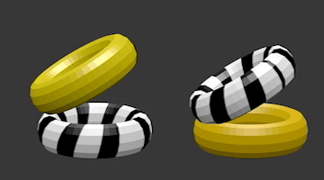

Tire Illusion
08/05/2024

Left: a rigid object with two tires, one with texture on a dark ground, and the other is attached to it with an acute angle. This rigid object rotates around the vertical axis penetrating at the center of the bottom tire. Instead of perceiving rigid rotation, two separate motions of the tires are perceived; the top tire wobbles and the bottom tire rotates.
Right: When a texture is added on the top tire, the ground-truth motion, the rotation of the tire, is perceived.
Since the rigid object on the left is perceived as non-rigid motion, this demonstrates a counterexample to the rigidity assumption.